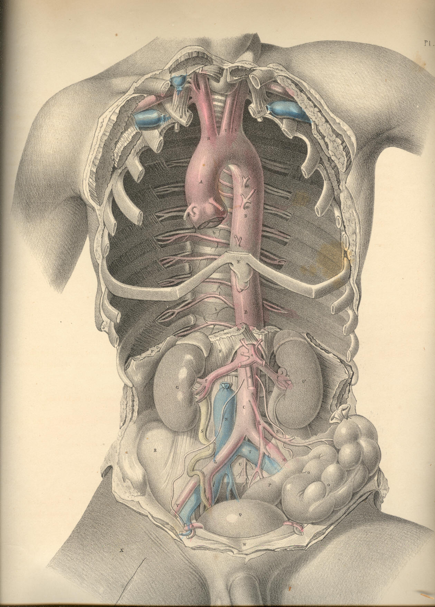

SURGICAL ANATOMY by JOSEPH MACLISE
COMMENTARY ON PLATE 25.
THE RELATION OF THE PRINCIPAL BLOODVESSELS OF THE THORAX AND
ABDOMEN TO THE OSSEOUS SKELETON, ETC.
The arterial system of vessels assumes, in all cases, somewhat of the
character of the forms upon which they are distributed, or of the organs
which they supply. This mode of distribution becomes the more apparent,
according as we rise from particulars to take a view of the whole. With
the same ease that any piece of the osseous fabric, taken separately,
may be known, so may any one artery, taken apart from the rest, be
distinguished as to the place which it occupied, and the organs which it
supplied in the economy. The vascular skeleton, whether taken as a whole
or in parts, exhibits characteristics as apparent as are those of the
osseous skeleton itself. The main bloodvessel, A B C, of the trunk of
the body, possesses character, sui
generis, just as the vertebral column
itself manifests. The main arteries of the head or limbs are as readily
distinguishable, the one from the other, as are the osseous fabrics of
the head and limbs. The visceral arteries are likewise moulded upon the
forms which they supply. But evidently the arterial system of vessels
conforms most strictly with the general design of the osseous skeleton.
In Plate 25, viewed as a whole, we find that as the vertebral column
stands central to the osseous skeleton, so does the aorta, A B C, take
the centre of the arterial skeleton. As the ribs jut symmetrically from
either side of the vertebral column, so do the intercostal arteries
follow them from their own points of origin in the aorta. The one side
of the osseous system is not more like the other than is the system of
vessels on one side like that of the other. And in addition to this fact
of a similarity of sides in the vascular as in the osseous skeleton, I
also remark that both extremities of the aorta divide into branches
which are similar to one another above and below, thereby conforming
exactly with the upper and lower limbs, which manifest unmistakable
points of analogy.
The branches which spring from the aortic arch above are destined to
supply the head and upper limbs. They are, H, the innominate artery, and
I K, the left common carotid and subclavian arteries. The branches which
spring from the other extremity of the aorta are disposed for the
support of the pelvis and lower limbs; they are the right and left
common iliac arteries, L M. These vessels exhibit, at both ends of the
main aortic trunk, a remarkable analogy; and as the knowledge of this
fact may serve to lighten the dry and weary detail of descriptive
anatomy, at the same time that it points directly to views of practical
import, I may be allowed briefly to remark upon it as follows:--
The vessels which spring from both ends of the aorta, as seen in Plate
25, are represented in what is called their normal character--that is,
while three vessels, H I K, spring separately from the aortic arch
above, only two vessels, L and M, arise from the aorta below. Let the
anatomist now recall to mind the "peculiarities" which at times appear
amongst the vessels, H I K, above, and he will find that some of them
absolutely correspond to the normal arrangement of the vessels, L M,
below. And if he will consider the "peculiarities" which occur to the
normal order of the vessels, L M, below, he will find that some of these
correspond exactly to the normal order of the vessels above. Thus, when
I K of the left side join into a common trunk, this resembles the
innominate artery, H, of the right side, and then both these vessels
perfectly correspond with the two common iliac arteries below. When, on
the other hand, L and M, the common iliac arteries, divide,
immediately after leaving the aortic trunk, into two pairs of branches,
they correspond to the abnormal condition of the vessels, H I K, above;
where H, immediately after leaving the aortic arch, divides into two
branches, like I K. With this generalization upon the normal and
abnormal facts of arrangement, exhibited among the vessels arising from
both ends of the aorta, I furnish to the reader the idea that the
vessels, H I K, above may present of the same figure as the vessels, L
M, below, and these latter may assume the character of H I K, above.
Whenever, therefore, either set of vessels becomes the subject of
operation, such as having a ligature applied to them, we must be
prepared to meet the "varieties."
The veins assume an arrangement similar to that of the arteries, and the
above remarks will therefore equally apply to the veins. In the same way
as the arteries, H I K, may present in the condition of two common or
brachio-cephalic trunks, and thereby simulate the condition of the
common iliac arteries, so we find that the normal forms of the veins
above and below actually and permanently exhibit this very type. The
brachio-cephalic veins, D B, Plate 26, exactly correspond to each
other, and to the common iliac veins, S T; and as these latter
correspond precisely with the common iliac arteries, so may we infer
that the original or typical condition of the vessels I K, Plate 25, is
a brachia-cephalic or common-trunk union corresponding with its
brachio-cephalic vein. When the vessels, I K, therefore present of the
brachio-cephalic form as the vessel H, we have a perfect correspondence
between the two extremes of the aorta, both as regards the arteries
arising from it, and the veins which accompany these arteries; and this
condition of the vascular skeleton I regard as the typical uniformity.
The separate condition of the vessels I K, notwithstanding the frequency
of the occurrence of such, may be considered as a special variation from
the original type.
The length of the aorta is variable in two or more bodies; and so,
likewise, is the length of the trunk of each of those great branches
which springs from its arch above, and of those into which it divides
below, The modes in which these variations as to length occur, are
numerous. The top of the arch of the aorta is described as being in
general on a level with the cartilages of the second ribs, from which
point it descends on the left side of the spinal column; and after
having wound gradually forwards to the forepart of the lumbar spine at
C, divides opposite to the fourth lumbar vertebra into the right and
left common iliac arteries. The length of that portion of the aorta
which is called thoracic, is determined by the position of the pillars
of the diaphragm F, which span the vessel; and from this point to where
the aorta divides into the two common iliac arteries, the main vessel is
named abdominal. The aorta, from its arch to its point of division on
the lumbar vertebrae, gradually diminishes in caliber, according to the
number and succession of the branches derived from it.
The varieties as to length exhibited by the aorta itself, and by the
principal branches which spring from it, occur under the following
mentioned conditions:--When the arch of the aorta rises above or sinks
below its ordinary position or level,--namely, the cartilages of the
second ribs, as seen in Plate 25,--it varies not only its own length,
but also that of the vessels H I K; for if the arch of the aorta rises
above this level, the vessels H I K become shortened; and as the arch
sinks below this level, these vessels become lengthened. Even when the
aortic arch holds its proper level in the thorax, still the vessels H I
K may vary as to length, according to the height to which they rise in
the neck previously to their division. When the aorta sinks below its
proper level at the same time that the vessels H I K rise considerably
above that point at which they usually arch or divide in the neck, then
of course their length becomes greatly increased. When, on the other
hand, the aortic arch rises above its usual level, whilst the vessels H
I K arch and divide at a low position in the neck, then their length
becomes very much diminished. The length of the artery H may be
increased even though the arch of the aorta holds its proper level, and
though the vessels H I K occupy their usual position in the neck; for it
is true that the vessel H may spring from a point of the aortic arch A
nearer to the origin of this from the ventricle of the heart, whilst the
vessel I may be shortened, owing to the fact of its arising from some
part of H, the innominate vessel. All these circumstances are so
obvious, that they need no comment, were it not for the necessity of
impressing the surgeon with the fact that uncertainty as to a successful
result must always attach to his operation of including in a ligature
either of the vessels H I K, so as to affect an aneurismal tumour.
Now whilst the length of the aorta and that of the principal branches
springing from its arch may be varied according to the above-mentioned
conditions, so may the length of the aorta itself, and of the two common
iliac vessels, vary according to the place whereat the aorta, C,
bifurcates. Or, even when this point of division is opposite the usual
vertebra,--viz., the fourth lumbar,--still the common iliac vessels may
be short or long, according to the place where they divide into external
and internal iliac branches. The aorta may bifurcate almost as high up
as where the pillars of the diaphragm overarch it, or as low down as the
fifth lumbar vertebra. The occasional existence of a sixth lumbar
vertebra also causes a variety in the length, not only of the aorta, but
of the two common iliac vessels and their branches.[Footnote]
[Footnote: Whatever may be the number of variations to which the
branches arising from both extremes of the aorta are liable, all
anatomists admit that the arrangement of these vessels, as exhibited in
Plate 25, is by far the most frequent. The surgical anatomist,
therefore, when planning his operation, takes this arrangement as the
standard type. Haller asserts this order of the vessels to be so
constant, that in four hundred bodies which he examined, he found only
one variety--namely, that in
which the left vertebral artery arose from
the aorta. Of other varieties described by authors, he observes--"Rara
vero haec omnia esse si dixero cum quadringenta nunc cadavera humana
dissecuerim, fidem forte inveniam." (Iconum Anatom.) This variety is
also stated by J. F. Meckel (Handbuch der Mensch Anat.), Soemmerring (De
Corp. Hum Fabrica), Boyer (Tr. d'Anat.), and Mr. Harrison (Surg. Anal.
of Art.), to be the most frequent. Tiedemann figures this variety
amongst others (Tabulae Arteriarum). Mr. Quain regards as the most
frequent change which occurs in the number of the branches of the aortic
arch, "that in which the left carotid is derived from the innominate."
(Anatomy of the Arteries, &c.) A case is recorded by Petsche
(quoted in
Haller), in which he states the bifurcation of the aorta to have taken
place at the origin of the renal arteries: (query) are we to suppose
that the renal arteries occupied their usual position? Cruveilhier
records a case (Anal. Descript.) in which the right common iliac was
wanting, in consequence of having divided at the aorta into the internal
and external iliac branches. Whether the knowledge of these and numerous
other varieties of the arterial system be of much practical import to
the surgeon, he will determine for himself. To the scientific anatomist,
it must appear that the main object in regard to them is to submit them
to a strict analogical reasoning, so as to demonstrate the operation of
that law which has produced them. To this end I have pointed to that
analogy which exists between the vessels arising from both extremities
of the aorta. "Itaque convertenda plane est opera ad inquirendas et
notandas rerum similitudines et analoga tam integralibus quam partibus;
illae enim sunt, quae naturam uniunt, et constituere scientias
incipiunt." "Natura enim non nisi parendo vincitur; et quod in
contemplatione instar causae est; id in operatione instar regulae est."
(Novum Organum Scientiarum, Aph. xxvii-iii, lib. i.)]
The difference between the perpendicular range of the anterior and
posterior walls of the thoracic cavity may be estimated on a reference
to Plate 25, in which the xyphoid cartilage, E, joined to the seventh
pair of ribs, bounds its anterior wall below, while F, the pillars of
the diaphragm, bound its posterior wall. The thoracic cavity is
therefore considerably deeper in its posterior than in its anterior
wall; and this occasions a difference of an opposite kind in the
anterior and posterior walls of the abdomen; for while the abdomen
ranges perpendicularly from E to W, its posterior range measures only
from F to the ventra of the iliac bones, R. The arching form of the
diaphragm, and the lower level which the pubic symphysis occupies
compared with that of the cristae of the iliac bones, occasion this
difference in the measure of both the thorax and abdomen.
The usual position of the kidneys, G G*, is on either side of the lumbar
spine, between the last ribs and the cristae of the iliac bones. The
kidneys lie on the fore part of the quadratus lumborum and psoae
muscles. They are sometimes found to have descended as low as the iliac
fossae, R, in consequence of pressure, occasioned by an enlarged liver
on the right, or by an enlarged spleen on the left. The length of the
abdominal part of the aorta may be estimated as being a third of the
entire vessel, measured from the top of its arch to its point of
bifurcation. So many and such large vessels arise from the abdominal
part of the aorta, and these are set so closely to each other, that it
must in all cases be very difficult to choose a proper locality whereat
to apply a ligature on this region of the vessel. If other circumstances
could fairly justify such an operation, the anatomist believes that the
circulation might be maintained through the anastomosis of the internal
mammary and intercostal arteries with the epigastric; the branches of
the superior mesenteric with those of the inferior; and the branches of
this latter with the perineal branches of the pubic. The lumbar, the
gluteal, and the circumflex ilii arteries, also communicate around the
hip-bone. The same vessels would serve to carryon the circulation if
either L, the common iliac, V, the external iliac, or the internal iliac
vessel, were the subject of the operation by ligature.
DESCRIPTION OF PLATE 25.
A. The arch of the aorta.
B B. The descending thoracic part of the aorta, giving off b b, the
intercostal arteries.
C. The abdominal part of the aorta.
D D. First pair of ribs.
E. The xyphoid cartilage.
G G*. The right and left kidneys.
H. The brachio-cephalic artery.
I. Left common carotid artery.
K. Left subclavian artery.
L. Right common iliac artery at its place of division.
M. Left common iliac artery, seen through the meso-rectum.
N. Inferior vena cava.
O O. The sigmoid flexure of the colon.
P. The rectum.
Q. The urinary bladder.
R. The right iliac fossa.
S S. The right and left ureters.
T. The left common iliac vein, joining the right under the right common
iliac artery to form the inferior vena cava.
U. Fifth lumbar vertebra.
V. The external iliac artery of right side.
W. The symphysis pubis.
X. An incision made over the locality of the femoral artery.
b b. The dorsal intercostal
arteries.
c. The coeliac axis
d. The superior mesenteric artery.
f f. The renal arteries.
g. The inferior mesenteric
artery.
h. The vas deferens bending
over the epigastric artery and the os pubis,
after having passed through the internal abdominal ring.

Plate 25
COMMENTARY ON PLATE 26